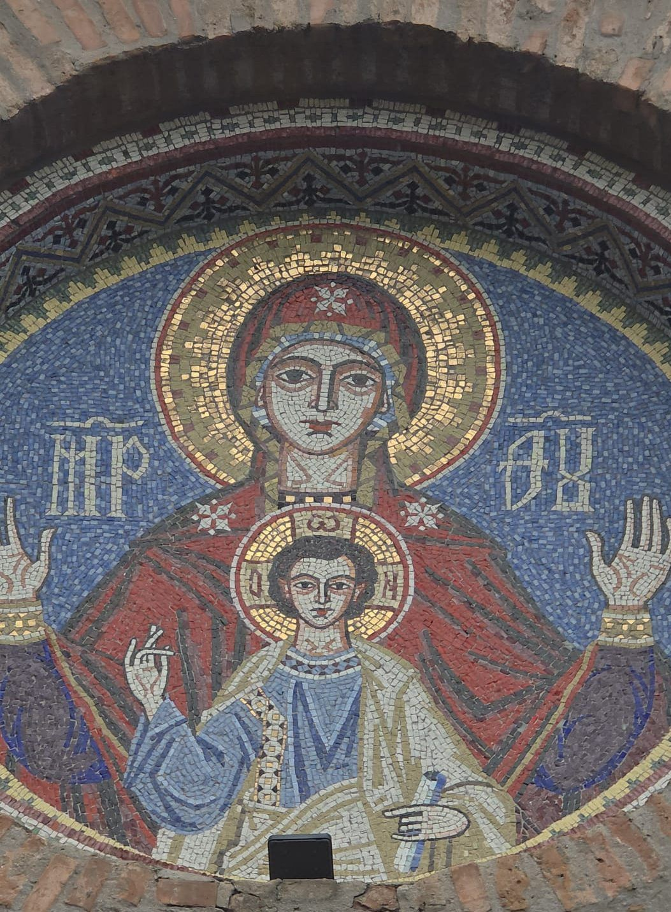
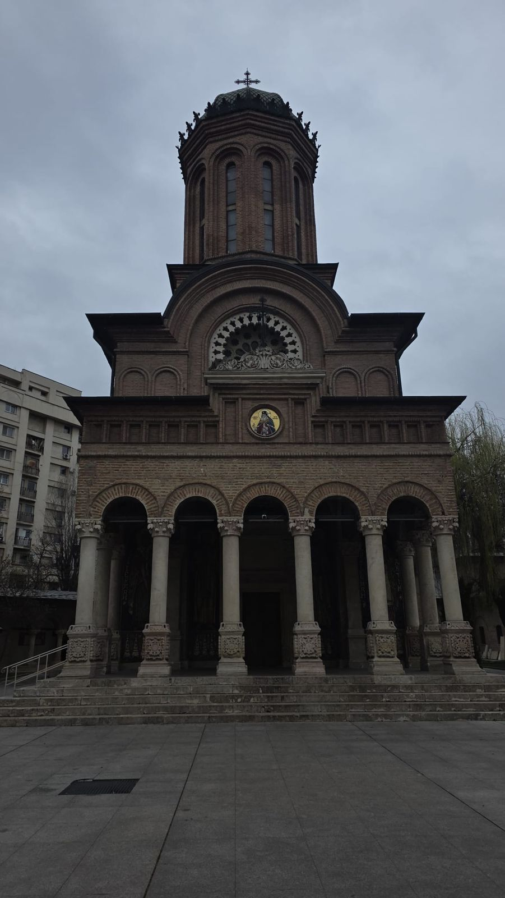
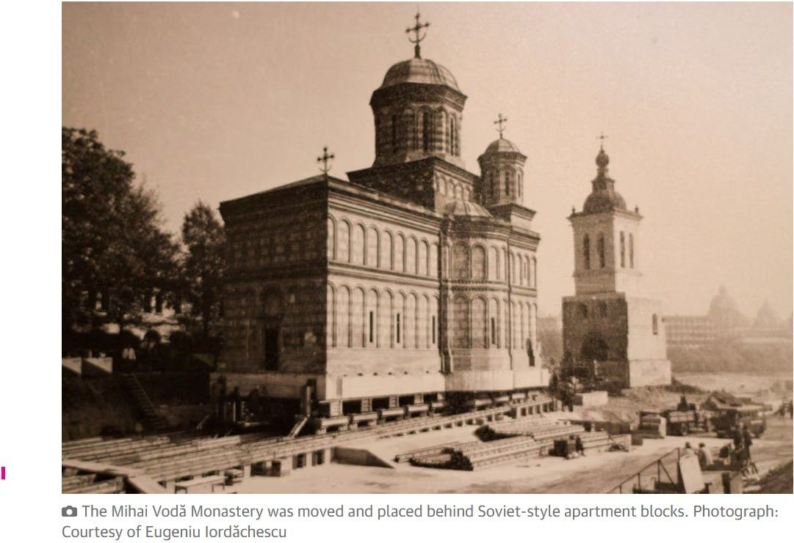
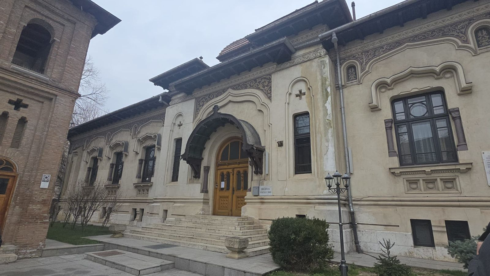

Journey 03 · București Note 4 of 5 Chronicles of
Bucharest: Crisis Creates Opportunities… But for Who?

There is a phrase I’ve leaned on for years: crisis creates opportunity.
I frame it as something positive: crisis gives you an opportunity to adapt, pivot, grown, to build something better out of the disruption. In crisis response work, keeping this kind of mindset can be the difference between moving forward and freezing.
But, walking through Bucharest, I found a version of this idea that challenged my understanding.
In 1977, a 7.2 magnitude earthquake hit Romania. Over 2,000 people died, mostly in Bucharest. There was extensive damage, and a very real loss of both human lives and historic properties.
And for the communist government? There was also opportunity.
There were already plans to reshape parts of the city. The earthquake was an opportunity to move faster along that time frame. Entire neighborhoods were demolished in the interest of “safety”, and people relocated with little regard to their wishes.
If you lived in a house, maybe with a small garden, that life ended. In it’s place: the communist apartment blocks. For some, especially those coming from rural areas, this was an upgrade: Running water, heating, electricity, stability. But for others, it was a lose: space was traded for standardization, ownership was redefined.
The same policy was applied to everyone, but it resulted in very different realities.
And, maybe I shouldn’t say “everyone” so casually. While the range of possibilities for most people were narrowed down into something that looked like equality, there were still elites. Political leaders living in villas most people never saw, entire areas the average person could not enter. Two parallel societies, made not just from economic separation, but physical and informational separation.
But… crisis creates opportunities.

The earthquake was an accelerator for plans to re-make the city of Bucharest. In the 1980s, an entire historical area was scheduled to be demolished, forcing 30,000+ people from their homes with the planned demolition of 9,000 houses, churches, synagogues and other buildings to make way for the construction of the Palace of the People. When the international news media began reporting on Romania’s rampant razing of their history and culture, it is said that Nicolae Iordăchescu was deeply displeased with how he was being portrayed in the media.
And this was the opportunity that Eugeniu Iordăchescu, a civil engineer with some radical ideas,
needed. In a move that was compared to orchestrating the moon landing, Iordăchescu developed a way to place whole buildings on what amounted to railway tracks and roll them to safety.
He developed a process to dig the ground out from under the churches, lay support and tracks, and then slowly move the buildings using a system of hydraulic levers and pulleys. Everything relied on Romanian equipment and technologies since Romania was largely cut off from the rest of the world.
The first church was the 18th Century Schitul Maicilor. Hospitals and banks were moved. At one point an entire apartment complex was moved – with people still inside and the gas and water lines attached!

But perhaps most impressive was moving the 16th-century Mihai Voda Church and tower. It was moved, with its massive load of books and library shelves, 24 meters from it’s original location, weighing more than 9,000 tonnes.
All of the buildings moved this way made it to their new location unscathed. But not all of the buildings could be saved. Moving them took time, time that Ceaușescu did not want to waste, so 22 churches (some of which had already been approved to be moved!) were destroyed.
But Iordăchescu still managed to save many cultural and religious icons.

Crisis creates opportunities. This part is still true.
But walking through Bucharest, I don’t think the phrase is inherently hopeful anymore. The same earthquake that cleared the way for forced displacement also made space for ingenuity. The same system that erased entire neighborhoods also produced someone who found a way to move buildings instead of destroying them.
Opportunity showed up, but the direction it took wasn’t determined by the crisis itself. It was shaped by the people making decisions inside it.
So maybe the point isn’t just to “see” opportunity. Maybe it’s to recognize that crisis doesn’t decide what gets built, preserved, or erased.
We do.
If I can recommend a book to you, even to skim through and see the photos of what Romania looked like before, I would urge you to check out:
The Razing of Romania’s Past by Dinu C. Giurescu
82_Razing20of20Romania27s20Past_2024-11-22-171111_eynh.pdf
Originally published at fieldnotesfromabroad.com/2026/04/05/field-notes-crisis-creates-opportunities/